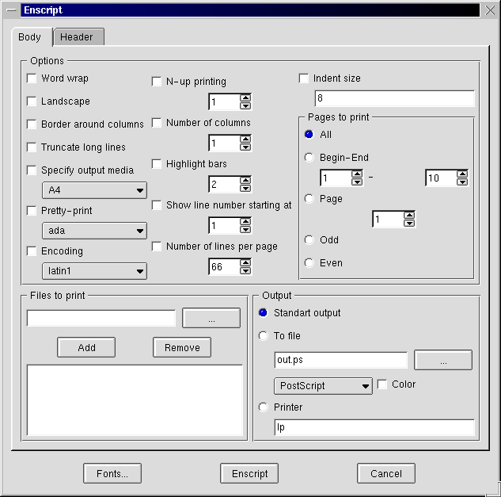
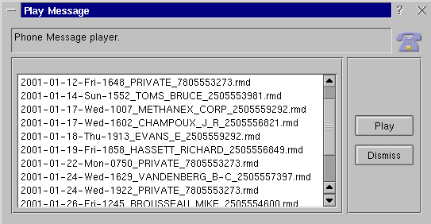
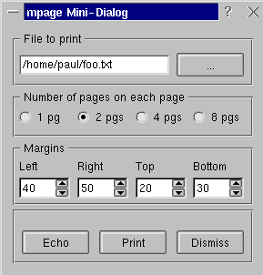

Система создания диалогов Kaptain
Автор: © Paul Evans
Перевод: © Александр Михайлов.
``В чём действительно нуждается Линукс, так это в ...'' таково
начало довольно часто встречающейся фразы, которая обычно заканчивается
так ``графическом интерфейсе для старых приложений командной строки.''
Цитируя одного редактора журнала: ``Конечно, Линукс нуждается не
просто в диалогах, но диалогах которые могут показывать вам опции
командной строки генерируемые ими, так, чтобы вы могли понять что делает
та или иная опция.'' От себя могу добавить, что было бы неплохо, если
бы такие диалоги было легко создавать, чтобы большее число людей захотело
сделать это.
Что может сделать для вас Kaptain ?
Kaptain
может смешивать различные типы элементов управления в современно
выглядящий диалог, который создаётся на основе текстового файла. Эта
программа возмёт на себя заботу о выборе типа элементов управления и их
размещении. Вы можете даже сводить виджеты в таблицы и создавать вложенные
диалоги. И, что самое важное, Kaptain может выводить генерируемые им
команды в консоль, это полезно обучающих целям (или чтобы
поэкспериментировать в своё удовольствие). Он также поддерживает
контекстные подсказки и имеет функцию WhatsThis (ЧтоЭто), чтобы помочь
вам. Вы даже можете использовать его как часть конвейера и создавать
необходимую команду на лету.
Линукс полон мощных утилит командной строки, таких как enscript
и mpage, но, даже если бы вы были их активным пользователем, вы бы
никогда не смогли запомнить все их ключи и опции. Kaptain просто
идеален для создания диалогов содержащих множество флажков (checkboxes),
инкрементных регуляторов (spinners) или комбинированных списков (combos) и
т.д. Также с помощью него очень удобно создавать скрипты для
преобразования файлов. Я сконструировал множество, эээ... интересно
выглядивших конвейеров (pipe) для преобразования графических, звуковых и
текстовых форматов. Последнее требует совсем немного программирования на
bash, до тех пор пока вам не потребуется изменять какие либо опции для
команд. К тому времени как вы напишите скрипт поддерживающий все опции ...
вам скорее всего придётся писать man страницу для него.

Я бы не начал писать это, если бы Kaptain не мог
делать всё вышеописанное, но если бы я сказал что это было просто для
меня, я бы соврал. Я специально выделил "меня" в предыдущем
предложении: я никогда не писал ничего объектно-ориентированного раньше.
Если вы писали, то я уверен что ваше знакомство с Kaptain будет
легким. Но даже если вы не писали, не волнуйтесь. Я на своём опыте
доказал, что вы сможете начать писать скрипты для Kaptain, не
прилагая к этому особых усилий.
Если вы уже знакомы с объектно-ориентированным подходом, я предлагаю
вам просто загрузить программу и испытать её, я уверен что вы её полюбите.
На самом деле, это не ОО в обычном его понимании. Автор : ``взял идею
из Формальной Теории Языка (математика), где грамматические конструкции
образующие текст являются математическими объектами. Так что слова
терминал, нетерминал, хорошо известны в ФТЯ, но негде больше. Для тех кто
изучал подобные вещи, будет приятно увидеть то, с чем они хорошо знакомы,
для прочих это всего лишь несколько новых слов. BTW, YACC также используют
Контекстно-Независимые грамматические конструкции. ''
Это изображение уменьшенная версия скриншота диалога для
enscript. Вы можете щелкнуть на нём, чтобы увеличить.
Даже если вы не собираетесь писать что либо, вам всё равно стоит
скачать Kaptain, т.к. в его дистрибутив (около 400Кб) входит
множество скриптов-примеров:
- arping
- crypt
- curl
- enscript
- find
- finger
- grep
- indent
- ls
- nslookup
- open
- ping
- procmail
- tar
- weblint
- whois
- zangband
После компиляции, бинарный файл занимает около
100Кб.
Теперь я должен напомнить что никогда раньше не занимался написанием
скриптов с использованием '->', объектов или наследования. Конечно, я
копировал фрагменты Java (copy-&-paste), как и многие другие, но
никогда по настоящему не понимал того, что при этом происходит.
Любые изменения, вносимые мной, обычно были тривиальными и ошибочными.
Если что-то и работало после моего вмешательства, то это происходило чисто
случайно.
Я думаю, что я просто не был правильно настроен на изучение. В конце
концов, единственный пример объектно-ориентированного программирования,
который я (и большинство других людей) видел - это Java. Мы опасаемся
Java, т.к. он превращает наши обычно быстрые браузеры в ленивых монстров.
Я не понимал этой нелюбви, до тех пор пока однажды не увидел ужасное
'loading java' или нечто похожее в Netscape. Очевидно, что это не
должно быть так. Это действительно прекрасный метод написания
программ, после того как вы однажды поймёте его. Я достаточно давно узнал,
что его можно применять даже на perl, но я никогда не мог забыть как одно
Java-приложение похоронило мой вечерний сеанс путешествия по Сети. А
недавно я еще раз убедился в правильности своей позиции по отношению к
Java. В январском выпуске (за 2001 год) "Software Development", на 26
странице автор пишет: ''Я специализируюсь на Java-программировании ...
Мой план А, по разрешению ситуации с пожирающим память приложением ... это
взмахнуть моей рукой и прокричать 'Бах! Вот зачем нам нужна виртуальная
память.' 20 Гигабайтовый диск на этой системе вызывает у меня приступ
клаустрофобии'' Я знал это ! Если быть честным, то это было вступление
к статье о встроенных приложених, так что я надеюсь, что это юмор :).
Давайте создадим диалог
Я не могу придумать ни одной причины, почему нельзя использовать мой
собственный диалог в качестве отправной точки, поэтому мы напишем простой
диалог, позволяющий прослушивать телефонные сообщения от vgetty.
Что нам нужно сделать
Мы хотим отображать и проигрывать голосовые сообщения из графического
интерфейса. Сообщения живут в директории /var/spool/voice/incoming. Мы
хотим отобразить список сообщений, выбрать одно из них и воспроизвести
его. Звучит довольно просто, а с Kaptain реализация не станет
сложнее задумки.
Скрипт
Я собираюсь описать как сделать скрипт исполнимым, т.к. я вспоминаю мою
озадаченность, когда я только начал работать с Линукс, таинственными
комментариями в начале некоторых скриптов и надеюсь, что это поможет
другим. Просто переходите к Полезные
вещи, если не хотите читать это.
Во-первых, давайте создадим файл 'playmessage'. Итак, мы запускаем
shell и вводим "touch playmessage" или наш любимый текстовый редактор и
выбираем 'save as'. В любом случае вы должны начать редактировать
текстовый файл 'playmessage' или его аналог. Лучшее место для размещения
такого рода вещей это "/home/ваше-имя/bin", т.к. эта директория скорее
всего уже является частью вашего пути и у вас всё время есть необходимые
права для её использования. Если эта директория не существует, просто
создайте её при помощи mkdir.
Первой строкой вашего скрипта будет строка объявления исполнимой
программы. В Линукс любой файл считается исполнимым, если у него
установлен бит x. Даже если это на самом деле не программа, а
просто скрипт, первая строка подскажет операционной системе, как исполнить
его так, как если бы это была настоящая программа. Результатом этого
является то, что вы можете ввести имя файла и он будет исполнен.
Далее нам нужно знать, куда был установлен kaptain. Вызовите
xterm или консоль, введите "which kaptain" и нажмите enter. У меня
результатом было "/home/paul/bin/kaptain", но на вашей системе это скорее
всего будет "/usr/bin/kaptain" или "/usr/local/bin/kaptain". Теперь, когда
мы знаем, где находится kaptain, мы можем написать нашу первую строку:
#!/usr/bin/kaptain
и сохраните файл.
Мы готовы написать наш скрипт. Последняя вещь, которую мы должны
сделать, перед запуском, это установить бит 'исполнимый' на нашей новой
"программе". Отправляйтесь назад в ваш shell и убедитесь, что вы в
директории, которая содержит 'playmessage'. Теперь введите "chmod +x
playmessage". Это установит все биты исполнения. Теперь просмотр
директории при помощи 'ls', должен выделить зелёным цветом 'playmessage' c
астериксом перед ним, показывающим что он исполнимый.
В этом диалоге всего десять строчек и две из них только для
демонстрации. Единственная вещь, которую они делают, это отображение
заголовка и иконки. На самом деле мы могли обойтись и без кнопки
"Dismiss". Я хотел показать вам как немного строк нужно для создания
полнофункционального диалога. Текстовая версия для копирования находится
здесь.
#!/home/paul/bin/kaptain
start "Play Message" -> descr msglist;
descr :horizontal -> title pic;
title -> @text ("Phone Message player.");
pic -> @icon("/usr/share/icons/large/kvoice.xpm");
msglist :framed :horizontal -> msg buttons;
msg -> @list(`ls /var/spool/voice/incoming`);
buttons -> play close;
play -> @action(play_rmd)="Play";
close -> @close="Dismiss";
play_rmd -> "rmdtopvf /var/spool/voice/incoming/"msg" | pvftowav | play -t wav - ";

Вот наша первая строка:
start "Play Message" -> descr msglist;
Заметьте точку с запятой на конце строки. Это обязательно, так же как и
в perl. На самом деле Kaptain достаточно "перлообразен", с некоторыми
дополнениями. Главный контейнер называется 'start', это также встроенная в
Kaptain грамматическая конструкция и вы должны использовать это слово в
вашем первом выражении. Взятое в кавычки "Play Message" не обязательно и
используется только для установления заголовка окна диалога.
Справа, после "->", вы можете видеть слова "descr" и "msglist". В
грамматике Kaptain они являются "нетерминалами" ("nonterminals") и
ссылаются на некую область диалога. Они могу быть названы так, как вам
удобно, если название начинается с буквы. Вы также можете указать столько
областей, сколько вам угодно.
Итак, мы определили диалог с двумя зонами, названными "descr" и
"msglist". Если вы попытаетесь запустить это, не добавляя каких либо
других команд, оно завершится с ошибкой. Почему? Т.к. названные области ни
на что не ссылаются - мы ещё не определили их. Следующие несколько строк
определяют область "descr" диалога:
descr :horizontal -> title pic;
title -> @text ("Phone Message player.");
pic -> @icon("/usr/share/icons/large/kvoice.xpm");
Первая строка "descr" очень похожа на первую строку нашего скрипта и
делает почти тоже самое. Она определяет две области диалога. Единственное
отличие - это опция ':horisontal'. Она заставляет Kaptain располагать их
горизонтально. Конечно теперь эти новые зоны должны быть
ограниченны (или указывать на другие зоны), это делается при помощи
следующих за ними двух строк. "title" теперь указывает на текстовый
виджет, а "pic" на иконку. Грамматика Kaptain называет их _specials
(специальные). Список доступных "_specials" можно увидеть здесь
(описания на англ. языке). Он включает инкрементные регуляторы,
комбинированные списки, файловые диалоги и т.д.
Эти последние строки завершают весь диалог, завершая область диалога
"msglist":
msglist :framed :horizontal -> msg buttons;
msg -> @list(`ls /var/spool/voice/incoming`);
buttons -> play close;
play -> @action(play_rmd)="Play";
close -> @close="Dismiss";
play_rmd -> "rmdtopvf /var/spool/voice/incoming/"msg" | pvftowav | play -t wav - ";
И опять мы видим знакомую строку. "msglist" только что добавил к себе
две дочерних области. Теперь, когда вы знаете что означает опция
":horizontal", я думаю вы догадаетесь что значит опция ":framed".
Следующая строка - для "msg" - довольна интересна. Она одновременно
проста и мощна. Я думаю вы поняли, что "@list" отвечает за список
отображаемый в диалоге, но посмотрите откуда он берёт своё содержимое:
строка shell скрипта! Всё что ограниченно обратными кавычками (клавиша
слева от "1" на вашей клавиатуре, обычная одинарная кавычка не подойдёт.)
будет исполнено и его стандартный вывод будет "скормлен" "special". Вы
можете разместить здесь всё что вам угодно, "perl -e" или что то еще, даже
многострочное.
Единственная оставшаяся область предназначена для кнопок. Эта область
содержит еще две дочерних, по одной на каждую кнопку. Кнопка "play" это
другой способ исполнения команды shell, в данном случае канала для
конвертации и проигрывания файлов записанных модемом. И опять, вы можете
взять текстовую версию скрипта здесь. Будет полезно посмотреть на всё
вместе, чтобы понять как это работает. Как видите, всё просто, вы можете
доработать его как вам нравиться: "скормить" списку вашу музыкальную
директорию и изменить команду проигрывания на ваш любимый mp3
проигрыватель, например. Обрабатывать текстовые файлы, конвертировать
изображения; он может быть основой для множества других вещей.
Всё настолько простое становиться почти что зависимостью, и я едва
удержался от искушения начать "приукрашивать" скрипт. Т.к. у меня был
только один способ справиться с искушением (я поддался ему), то результат
моих доработок вы можете увидеть здесь
а сам скрипт здесь.
Этот пример был полезен по двум причинам: a) Я получил замену
kvoice, испорченному kde2 b) Я изучил ограничения Kaptain.
Вы не можете обновлять списки или изменять что либо после запуска (конечно
настройки элементов управления оказывают влияние). Команды
исполняются только во время запуска. Это нормально для диалоговой
программы, и я действительно достиг пределов с моим небольшим
экспериментом с kvoice. Давайте сделаем то, что я хотел изначально
показать.
Диалог для mpage

Если вы видели опции командной строки для mpage, то сейчас вы
должно быть напуганы. Очень напуганы. Но не бойтесь. Мы используем только
небольшую часть опций mpage. И, так как мы уже взглянули на основы,
я не собираюсь расписывать его строка за строкой. Я включил его в основном
для того, чтобы продемонстрировать @echo special.
Для тех, кто не знаком с mpage, это утилита командной строки для
печати множества страниц на одной. Вы можете напечатать 2,4, или 8, но вам
лучше обладать исключительным зрением и хорошим принтером, для печати 8:1!
Другая важная вещь которую нужно знать об mpage это то, что у неё
есть около 50 различных опций - на самом деле настоящее число опций
перечисленное в разделе 'BUGS' man-страницы :-) Я уверен, что я однажды
доработаю и этот скрипт, но на данный момент, давайте ограничимся выбором
количества страниц и отступов.
Вот скрипт:
#!/home/paul/bin/kaptain -V
start :framed "mpage Mini-Dialog" -> file numpages margins buttons;
file "Файл для печати" -> @infile("*.txt");
numpages :horizontal "Количество страниц на каждой странице" -> p1 | ! p2 | p4 | p8;
p1 "1 pg" -> "1";
p2 "2 pgs" -> "2";
p4 "4 pgs" -> "4";
p8 "8 pgs" -> "8";
margins :horizontal "Margins" -> left right top bottom;
left "Left" -> @integer(10,100)=40;
right "Right" -> @integer(10,100)=50;
top "Top" -> @integer(10,100)=20;
bottom "Bottom" -> @integer(10,100)=30;
buttons :horizontal -> echo print dismiss;
echo -> @echo(cmd)="Echo";
print -> @action(cmd)="Print";
dismiss -> @close()="Dismiss";
cmd -> "mpage -P -"numpages" -m" left "l" bottom "b" top "t" right" r "file;
Текстовая версия здесь.
Запустив его из xterm, вы можете делать изменения и щелкать на кнопке
"Echo", чтобы видеть, как изменяется командная строка, не тратя при этом
бумагу. Чтобы сохранить больше бумаги, уберите "-P" и всё будет выдаваться
на стандартный вывод, даже если вы нажмёте print. Чтобы действительно
получить удовольствие от экспериментов, измените командную строку на:
cmd -> "mpage -" numpages " -m" left "l" bottom "b" top "t" right "r " file" >test.ps";
затем вы можете просто просмотреть выданную страницу программой
просмотра. Или вы можете добавить ";viewername test.ps" к концу и убавить
количество действий - вообщем вы поняли идею.
Есть ещё одна статья о Kaptain, написанная hawkeye, она находится на Linux Today
Australia.
Я не стал описывать всё подряд, т.к. Kaptain может сделать это
сам. Есть ещё горы вещей, о которых я даже не упоминал. Kaptain
поставляется с качественной документацией и множеством примеров. Автора
Kaptain зовут TerИk Zsolt. Он усердно работает над
Kaptain - который всё ещё в версии 0.51. Если он получит широкое
распространение, то сможет принести большую пользу при изучении консольных
приложений и сохранить нам "дисковое пространство" в наших головах :).
Плюс, это самый безопасный путь поэкспериментировать с выводом, который я
когда либо находил. Не ждите пока кто то напишет скрипт для вас - сделайте
это сами. Mr. TerИk будет рад разместить их на своём сайте.
Существуют и другие диалоговые программы для X : gdialog,
который скорее всего уже имеется на вашей системе, Xdialog, который
предоставляет довольно приятные диалоги для даты/времени и прочие вещи, и
который можно загрузить здесь. Если
одна из программ для создания диалогов не может сделать то что вам нужно,
всегда есть выбор. Я уверен, есть и другие, которые я просто до сих их не
опробовал. Смешивайте и соединяйте их внутри одного скрипта.
Copyright © 2001, Paul Evans.
Copying license http://www.linuxgazette.com/copying.html
Published
in Issue 64 of Linux Gazette,
March 2001
Вернуться на главную страницу
{kind=link}